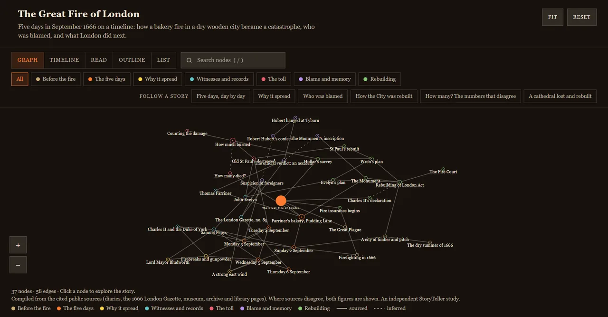
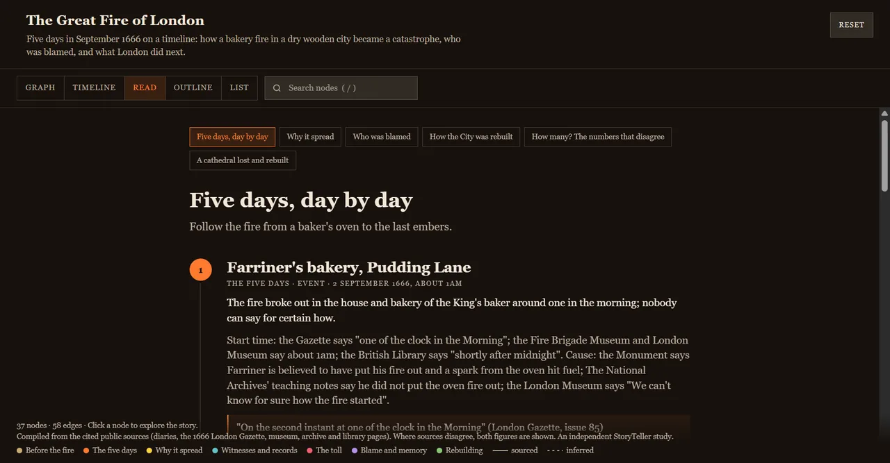
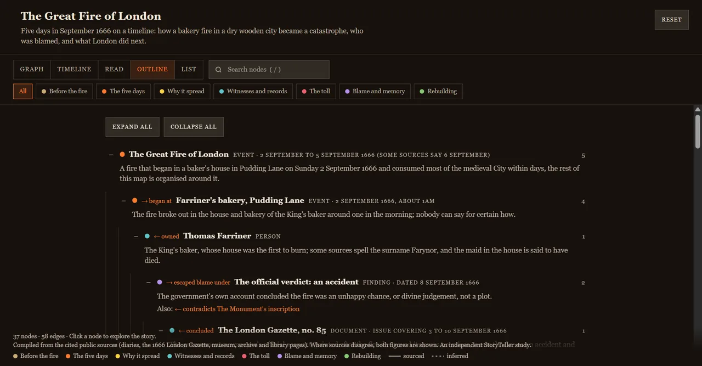
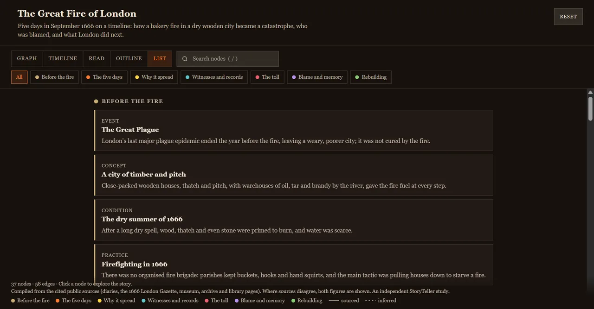
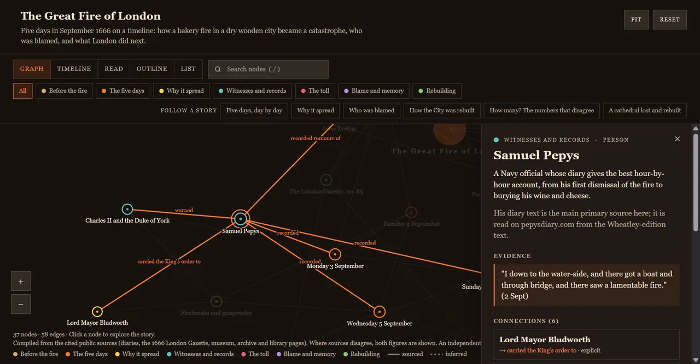

Open source · MIT licensed
Tell the story of anything.
Point an AI agent at StoryTeller, name a subject, and get back an explorable story where every claim is cited. One HTML file you can open, share or host anywhere.
No account. No server. No dependencies. Works offline.
From a subject to a sourced story
A person, a company, a relationship, a word, a historical event, a place, an idea: anything with a story.
Name a subject
Tell your agent what to cover, and optionally a page to start from. It scopes the story and asks only what it truly cannot decide for itself.
The agent does the work
It reads the playbook, researches beyond the first page, cites what it read, marks its own interpretations as inferred, and takes colours and fonts from the subject's own site when there is a brand.
You get one file
The build refuses unsourced or unreadable results, then writes a single HTML file. Open it, send it, or put it on any static host.
Clone {{REPO_URL}} and follow AGENTS.md to tell the story of <your subject>.
Works with any coding agent that can read files, run Node and browse the web. The instructions are plain Markdown; we have built and tested it with Claude-based agents.
One story, five ways to see it
The same sourced data renders as a graph, a timeline, a narrative, an outline and a list. Readers switch in the page; authors choose what to offer.

Graph
See how people, places, ideas and events connect. Drag, zoom, search and filter by theme. Solid lines are sourced; dashed lines are interpretation.
Timeline
Anything dated gets a zoomable, calendar-aware timeline. Pick a guided story and the axis zooms to its own dates.

Read
Each guided story as a narrative, step by step, with the evidence and sources under every beat.

Outline
The whole map as a table of contents you can expand and scan.

List
Everything grouped by theme, for fast lookup and the simplest possible reading.
Receipts, not vibes
A story is only as good as what backs it. StoryTeller makes the backing visible.
- Every node cites dated sources. The build refuses a node with none.
- Sourced or inferred, always labelled. A relationship the agent is interpreting is drawn dashed and called out.
- Disagreements are shown, not resolved. When sources conflict, you see both figures.
- Honest about limits. Agents are told to say what they could not read or verify, and to attribute claims that rest on one tertiary source.

Built with StoryTeller
Three worked examples, each from a one-line request. Every page below is a single file generated from the repository.
Built for agents, readable by humans
The repository is the product: instructions an agent can follow, and checks that catch it when it slips.
A playbook
Five steps (scope, research, model, brand, build and verify) plus advice for people, brands, relationships, etymology, history and places.
On-brand when there is a brand
A probe pulls a site's real colours and fonts; the build checks contrast. Subjects with no brand get a deliberate palette.
A validator and tests
Provenance, structure, dates and readability are enforced, with a test suite and CI on Node 18, 20 and 22.
Zero dependencies
Plain Node, plain HTML. The output has no runtime services, and no tracking.
Questions
Which agents does it work with?
Any coding agent that can read files, run Node and browse the web. The instructions are plain Markdown in the repository. We have built and tested it with Claude-based agents and have not claimed anything beyond that.
What does it cost?
StoryTeller is free and open source under the MIT license, and there is no service to sign up for. Your agent's own usage is what you pay for.
Can I trust the facts?
Every claim is cited, and the build enforces that citations exist. It cannot prove that a source says what the story says, so agents are told to flag what they could not verify. For anything that matters, read the sources linked in each node.
Can I make a story about a person?
Yes, from public sources or material you supply. The playbook forbids inferring sensitive attributes such as health, religion or finances, and asks agents to keep studies honest about who made them and what they are built from.
What do I get, and where can I put it?
One self-contained HTML file with its data inside. Open it locally, email it, or drop it on any static host. It makes no network calls except an optional web font if its theme names one.
How does it match a brand?
For companies and products the agent inspects the subject's own site for real colours and fonts, checks contrast, and records where each choice came from. Studies are labelled as independent unless the subject made them.
Tell your first story
Copy the prompt, give it to your agent, and pick a subject you care about.